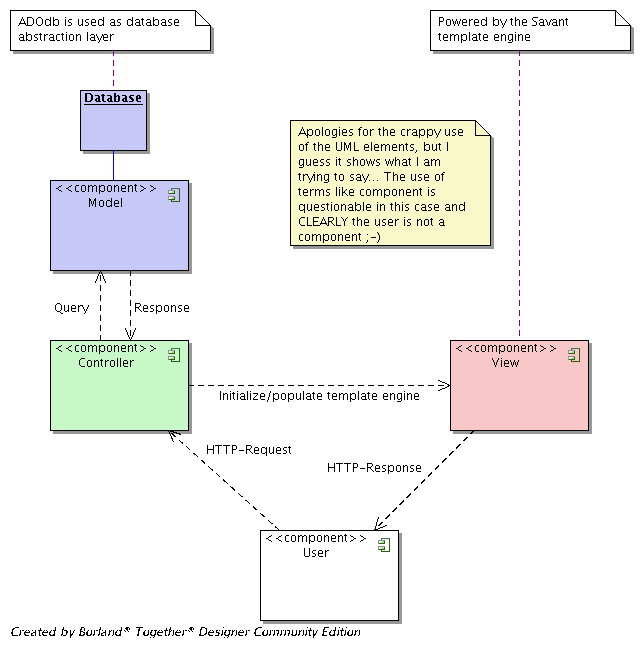

The main goal of using the MVC pattern is to display the display logic (the view/gui) from the business-logic/data (the processing part). These two parts are 'kept together' via the controller.
As mentioned here: '[c2.com]'
In Brim, there is NO DIRECT link between the model and the view, ALL communication must pass via the controller.
The Model in based around items with a potential hierachical relationship (see high level class diagram). The Item is an object that represents data in the database. The Services class that goes along with the Item provides the logic to add/update/delete items etc. Furthermore there is typically a Factory class that knows how to create an item from either a database resultset or an HTTP request
The model is object-oriented
The view contains the display logic of certain items and is procedural... it mainly contains the template files or helping classes that knows how to render trees etc.
The controller is the glue between the model and the view. It gives the view all the information it needs to display, checks whether certain actions may be performed etc.

{kind=link}